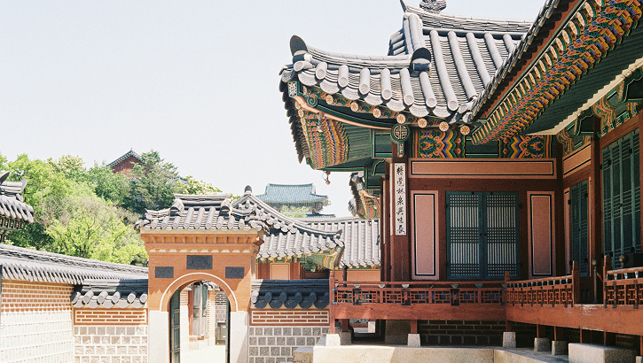
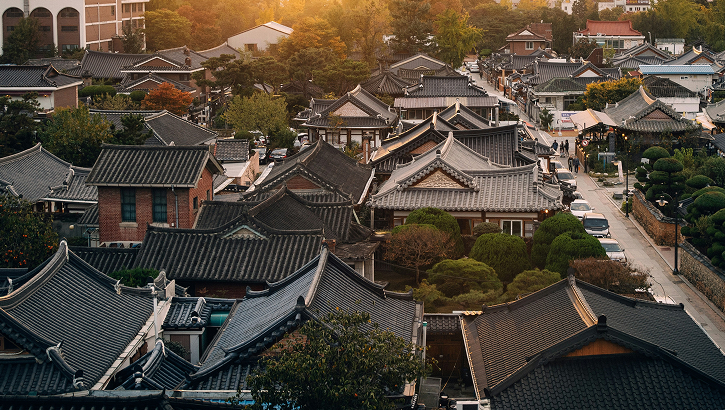
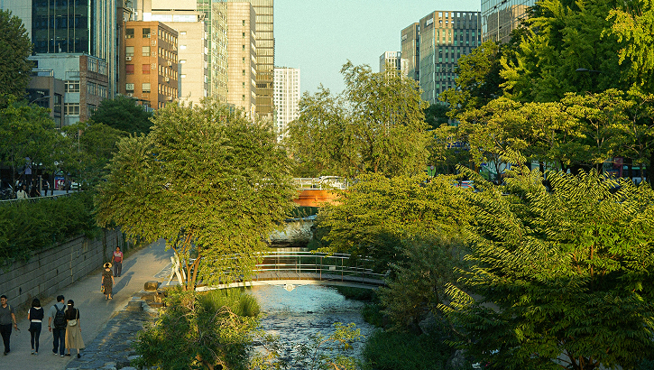
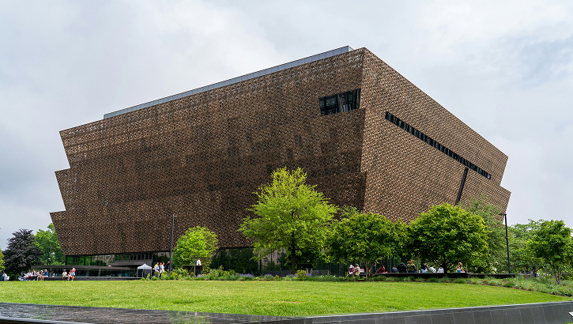
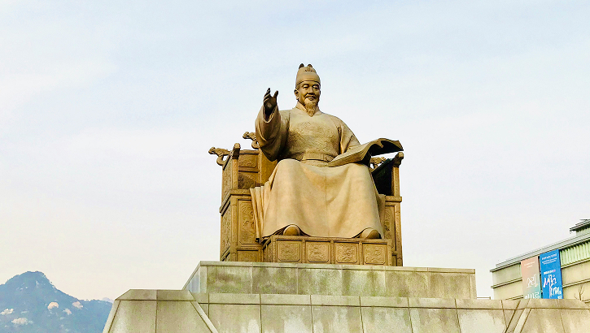
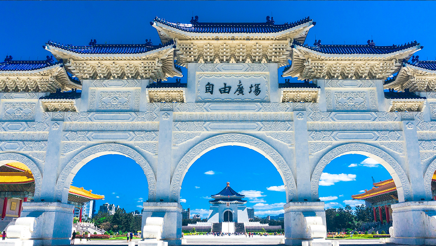
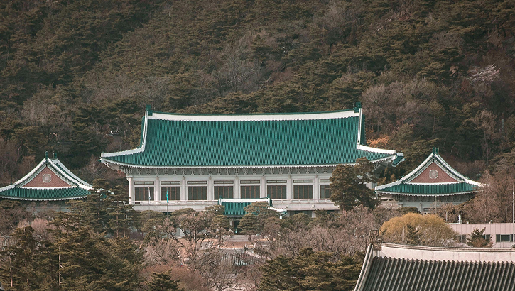

종로 관광명소
종로에서
종로에서
느끼는 문화의 여정
- 선택됨

북촌한옥마을
- 소재지 북촌로11길 일부 구간
- 연락처 02-2148-5819
- 추천코스 북촌한옥마을 → 카페거리 → 갤러리거리 → 삼청공원

인사동
- 소재지 서울특별시 종로구 인사동11길 19
- 연락처 02-737-7890
- 추천코스 경인미술관 → 운현궁 → 갤러리 상

청계천
- 소재지 서울시 성동구 청계천로540
- 연락처 02-2290-7111
- 추천코스 모전교 → 광장시장 → 동대문디자인플라자 → 두물다리

대학로
- 소재지 서울 종로구 대학로 104
- 연락처 1599-7838
- 추천코스 마로니에공원 → 아르코미술관 → 낙산공원 → 장면가옥

박물관
- 소재지 서울특별시 종로구 효자로 12
- 연락처 02-3701-7500
-
추천코스
대한민국역사박물관 → 국립고궁박물관 → 국립민속박물관 → 어린이민속박물관 →
북촌생활사박물관 → 가회박물관

고궁 / 도성
- 소재지 서울 종로구 사직로 161
- 연락처 02-3700-3900
- 추천코스 흥례문 → 영제교 → 근정전 → 사정전 → 수정전

청와대
- 소재지 서울특별시 종로구 청와대로 1
- 연락처 1522-7760
- 추천코스 녹지원 → 상춘재 → 구 본관 터 → 본관 → 영빈관